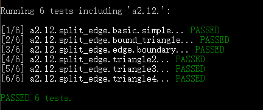
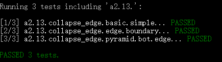
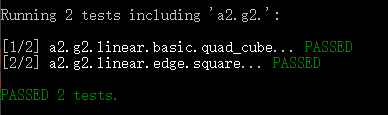
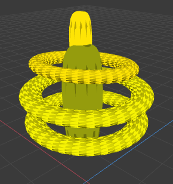
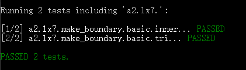
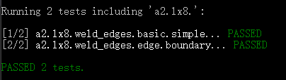

**Assignment 2 Report**
AndrewID: chuangm
(##) About this template
* If you choose to implement a task, please **CLEARLY** indicate that you implemented it. You can do this by adding ` IMPLEMENTED ` or something similar to the task.
* You can view your writeup by opening it in a browser - right click this file and open with your browser of choice.
* Replace reference images with your own screenshots or renders when applicable.
* If you didn't handle any edge cases or you don't think are any, please state that there isn't any.
* Include descriptions of any encountered problems and the time you spent on each task.
(##) A2L1 CHECKPOINT IMPLEMENTED
You do not need any screenshots for this task.
**What edge cases did you handle?**
* Answer here:
1. The edge is on boundary
2. The edge between the points making up more than two triangles.
3. The edge is the boundary of shape inside -> the shape is single inside, no connections.
Your completion will be graded based on the reference `test.a2.l1.cpp` file and
checking that the operation works in the GUI.
(##) A2L2 CHECKPOINT IMPLEMENTED
You do not need any screenshots for this task.
**What edge cases did you handle?**
* Answer here:
1. The splite edge is on boundary
2. the shape is triangle with only 3 edges
Your completion will be graded based on the reference `test.a2.l2.cpp` file and
checking that the operation works in the GUI.

(##) A2L3 CHECKPOINT IMPLEMENTED
You do not need any screenshots for this task.
**What edge cases did you handle?**
* Answer here:
1. Edge is on boundary
2. The face of the edge only contains 3 edge, after operation face becomes one line.
3. The edge is the bottom edge of pyramid or similar situation or shape
Your completion will be graded based on the reference `test.a2.l3.cpp` file and
checking that the operation works in the GUI.

(##) A2L4 CHECKPOINT IMPLEMENTED
You do not need any screenshots for this task.
**What edge cases did you handle?**
* Answer here:
1. face is the boundary
2. the shrink should be less and equal than 1
Your completion will be graded based on the reference `test.a2.l4.cpp` file and
checking that the operation works in the GUI.
(##) A2G1 FINAL IMPLEMENTED
You do not need any screenshots for this task.
Your completion will be graded based on the reference `test.a2.g1.cpp` file and
checking that the operation works in the GUI.
(##) A2G2 FINAL IMPLEMENTED
You do not need any screenshots for this task.
Your completion will be graded based on the reference `test.a2.g2.cpp` file and
checking that the operation works in the GUI.

(##) A2G3 FINAL IMPLEMENTED
You do not need any screenshots for this task.
Your completion will be graded based on the reference `test.a2.g3.cpp` file and
checking that the operation works in the GUI.
(##) A2GO1 CHOICE FINAL IMPLEMENTED
**Global Operation Completed: **
You do not need any screenshots for this task.
Your completion will be graded based on the reference file for the operation of choice and
checking that the operation works in the GUI.
(##) CREATED MODEL FINAL
Image of model in the GUI:

Explanation of what it is and how you made it:
This is based on last HW, I applied methods like loop to make it more smooth and more
like a space ship. At begining, they are not smooth enough, but after applying these methods,
the object becomes more smooth and more like space ship.
Any free model sources you need to credit?
No
(##) A2LX1 EXTRA CREDIT IMPLEMENTED
You do not need any screenshots for this task.
**What edge cases did you handle?**
* Answer here:
1. vertix is on boundary
Your completion will be graded based on the reference `test.a2.lx1.cpp` file and
checking that the operation works in the GUI.
(##) A2LX2 EXTRA CREDIT IMPLEMENTED
You do not need any screenshots for this task.
**What edge cases did you handle?**
* Answer here:
1. edge is on boundary
Your completion will be graded based on the reference `test.a2.lx2.cpp` file and
checking that the operation works in the GUI.
(##) A2LX3 EXTRA CREDIT IMPLEMENTED
You do not need any screenshots for this task.
**What edge cases did you handle?**
* Answer here:
1. face is on boundary
Your completion will be graded based on the reference `test.a2.lx3.cpp` file and
checking that the operation works in the GUI.
(##) A2LX4 EXTRA CREDIT IMPLEMENTED
You do not need any screenshots for this task.
**What edge cases did you handle?**
* Answer here:
1. face is on boundary
Your completion will be graded based on the reference `test.a2.lx4.cpp` file and
checking that the operation works in the GUI.
(##) A2LX5 EXTRA CREDIT
You do not need any screenshots for this task.
**What edge cases did you handle?**
* Answer here:
Your completion will be graded based on the reference `test.a2.lx5.cpp` file and
checking that the operation works in the GUI.
(##) A2LX6 EXTRA CREDIT
You do not need any screenshots for this task.
**What edge cases did you handle?**
* Answer here:
Your completion will be graded based on the reference `test.a2.lx6.cpp` file and
checking that the operation works in the GUI.
(##) A2LX7 EXTRA CREDIT IMPLEMENTED
You do not need any screenshots for this task.
**What edge cases did you handle?**
* Answer here:
boundary
Your completion will be graded based on the reference `test.a2.lx7.cpp` file and
checking that the operation works in the GUI.

(##) A2LX8 EXTRA CREDIT IMPLEMENTED
You do not need any screenshots for this task.
**What edge cases did you handle?**
* Answer here:
boundary
Your completion will be graded based on the reference `test.a2.lx8.cpp` file and
checking that the operation works in the GUI.

(##) A2GO2 EXTRA CREDIT IMPLEMENTED
You do not need any screenshots for this task.
I have done all steps in guidence, but not passing test cases.
**Global Operation Completed: **
Your completion will be graded based on the reference file for the operation of choice and
checking that the operation works in the GUI.
(##) A2GO3 CHOICE EXTRA CREDIT
**Global Operation Completed: **
You do not need any screenshots for this task.
Your completion will be graded based on the reference file for the operation of choice and
checking that the operation works in the GUI.
(##) Feedback
Use this section to provide feedback about the assignment.
I have writen many extra test cases especially for split and flip.
A2L1:
3 hours.
For this is the first task. I have to spend a lot of time to review the course and
learn what steps I need to do for this part. Besides, some operation like
connection may be forgotten, and the order of each operation matters.
I found that using ->id to debug is useful.
A2L2:
5 hours.
For this task, I need to read the halfedge.h and halfedge-utility for there are
lots of useful functions inside. Also, there are more edge cases to considered compared
with the last task.
A2L3:
4 hours
For this task, I think finding if there are extra dege to delete can be difficult. To handle
edge cases, it takes much time.
A2L4:
6 hours.
For this task, I start to use vectors and for loop to store the objects I may use later. By using
vectors and loop, it really helps.
A2Lx1:
4 hours.
This task also requires using of loop and store objects in vectors.
A2Lx2:
3 hours.
For I have the expriences by doing the above tasks, this is not that hard.
A2Lx3:
4 hours.
This is kind of simialr like previous tasks, but need to consider more cases.
A2Lx4:
3 hours
This is not so hard for using loop can make it easier.
A2Lx7:
4 hours
Corner case not easy to solve.
A2Lx8:
4 hours
Kind of same like lx7.
A2G1
2 hours
Not difficult.
A2G2
1 hours
Not difficult.
A2G3
3 hours
Not very difficult.
A2Go1
10 hours.
Very difficult, also need to write extra test cases for splite and other functions.
Need to consider so many corner cases.
A2GO2
5 hours.
Also kind of difficult, I have implemented it according to guidence, but still some problems.